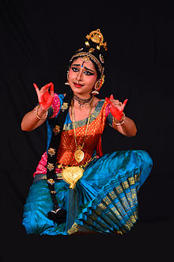
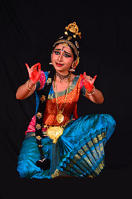

Introduction to Kuchipudi
Kuchipudi is a classical dance form from the Indian state of Andhra Pradesh. It originated in the village of Kuchipudi in the 17th century, as a dance drama form, but has evolved in modern times primarily into a dance form without the drama aspect. Kuchipudi exhibits scenes from Hindu Epics and mythological tales through dance, music, and acting. One distinguishing feature is that the male dancers often wear make-up and costumes to enact female roles, which is a hallmark of this dance form.
Historical Roots
The dance form was conceived by Siddhendra Yogi, a Brahmin who was inspired to create a new dance drama form by transforming the ancient Bharata Natyam dance form. Historically, the performers were all males belonging to the Brahmin community, and these dancers performed in the temples to worship the deity. Kuchipudi predominantly tells the stories of Krishna and his various avatars. Kuchipudi was patronized by the rulers of the Deccan, particularly the Golconda sultanate.
Performance and Techniques
Kuchipudi performances include pure dance (nritta), expressive dance (nritya), and mime (natya). The dancers perform a short pure dance piece called jatiswaram, followed by a longer piece that combines dance with expressive mime to tell a story, usually about Krishna or other Hindu gods. The expressive dance includes subtle facial expressions coined as "Bhavas", which are used to convey complex emotions and tell stories.
The movements in Kuchipudi are lighter and quicker than other classical dance forms, with greater emphasis on rhythmic eye movements. The music in Kuchipudi is classical Carnatic music with the mridangam as a typical percussion instrument, accompanied by the violin, flute, and the tambura providing the melodic support.
Cultural Significance
Kuchipudi holds a prominent place in Indian classical dance forms, engaging audiences with its dynamic narrative and theatrical elements. It is not only a dance form but also an act of worship, as performances traditionally are offered to deities in temples or religious festivals. Today, Kuchipudi is recognized worldwide for its deep roots in Indian mythology and philosophy and is taught in many dance schools across India and globally.
Explore Kuchipudi
 
